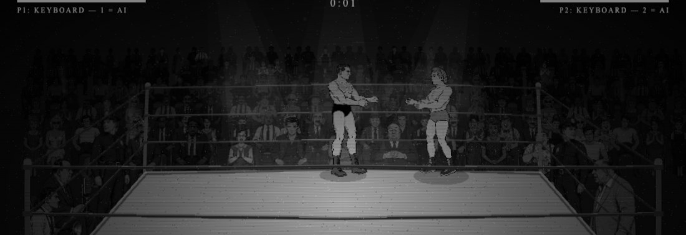

PLAN_SCALE T2.4. Lou (w1) vs George (w2). Each still is the arena as drawn: top rope and posts in frame. Body height is the union of the visible parts' frame bounds (includes transparent padding); post height is interpolated between the far post (120 px above the mat) and the near post (200 px). Numbers are measurements; Derek judges.
flag off · back row (y 266) · idle
lou: draw scale 0.4728, body 151.4 px, post 123.4 px, body/post 1.227 george: draw scale 0.6051, body 151.8 px, post 123.4 px, body/post 1.23
scale=v1 · back row (y 266) · idle

lou: draw scale 0.4983, body 159.6 px, post 123.4 px, body/post 1.293 george: draw scale 0.6377, body 160 px, post 123.4 px, body/post 1.297
flag off · back row (y 266) · wristlockHammerlock, clip frame 150
lou: draw scale 0.4728, body 150.5 px, post 123.4 px, body/post 1.219 george: draw scale 0.6051, body 149.4 px, post 123.4 px, body/post 1.211